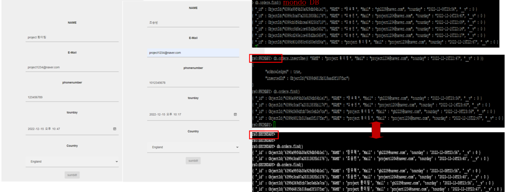
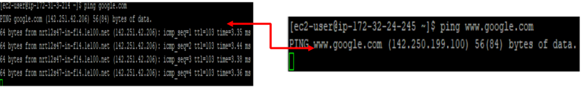

아키텍쳐

1. Ec2 웹서버 설정 (EC2에 node.js설치 후 웹서버)
1-1. Ec2 웹서버 설정 (EC2에 마운트 된 S3로 연결하여 웹서버)
2. ALB를 연결하여 Load Balancing 기능 확인
3. Auto Scaling 생성하고 Load Balancer에 연결

4. WAF에 생성된 Load Balancer 연결 (클라우드 프론트 및 지역 리소스 설정 → 서울 설정 → Free rule groups 선택하고 설정 → 설정 확인 및 우선순위 결정)
4-1. SQL INJECTION 확인
4-2. XSS 확인
5. Route 53 (호스팅 영역 생성 → 생성할 도메인 이름 입력 → 퍼블릭 호스팅 영역 → route53 레코드 값 가비아 네임서버에 입력 → 가비아 DNS 관리 → DNS 설정 → 타입 CNAME → 호스트 @, www 입력 및 ALB 값 입력
5-1. Route 53 적용(레코드 이름 작성 (x) → 레코드 유형 A → ALB 별칭 → 서울 선택 → 생성한 ALB 선택 → 라우팅 영역 → 단순 라우팅 선택 → 적용 확인
6. Document DB를 이용한 DR (Disaster Recovery) 구성 : 엔진은 4.0이상 글로벌 클러스터 적용 → 글로벌 클러스터를 인스턴스 용량이 작은 t3, t4g, r4 제외하고 만든다. → 마스터 사용자 이름 및 암호 입력 → primary, secondary 동일한 마스터 사용자 이름 및 암호를 이용
6-1. Document DB Cluster 만들기
6-2. Global Document DB Cluster 만들기 (작업 → 리전 추가 → 도쿄 리전 추가)
6-3. EC2 인스턴스에 연결 → chmod 400 키입력 → SSH 클라이언트 연결 → EC2 PRIMARY, SECONDARY 생성 확인
6-4. Seoul EC2 웹서버 (웹서버에 데이터 입력 → EC2 mongo DB에 저장 → DB관리자 선별 → PRIMARY 입력 및 전송 → SECONDARY 입력확인)

7. Beanstalk 환경 구축 Beanstalk 생성시 EC2, Auto scaling, Load Balencing 기능이 제공되어 손쉽게 배포 가능
7-1. Beanstalk에서 설정한 EC2
7-2. Beanstalk에서 NAT연결로 인한 외부로 ping test

8. VPC PEERING 연결 (피어링 설정 → 피어링 VPC 선택 → 피어링 할 다른 VPC 선택 → (내 계정 또는 다른 계정) → 도쿄 요청수락 → VPCPEERING 생성)
8-1. 요청자 VPC 와 수락자 VPC 확인 및 PING TEST 도쿄에 NAT설정으로 서울 → 도쿄 불가능(x) 도쿄 → 서울 가능(o)